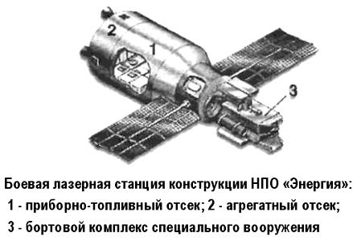
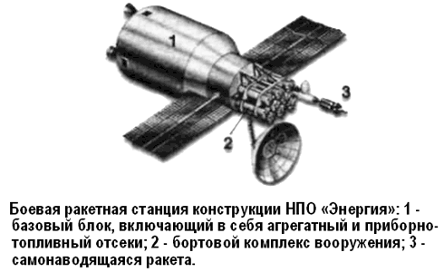

Боевые орбитальные комплексы для «Бурана»
Мы помним, что ракетно-космический комплекс «Энергия-Буран» создавался по заказу Министерства обороны для решения военных задач в ближнем космосе. Понятно, что в одно время с комплексом разрабатывались и полезные нагрузки для него. Что же они собой представляли?
Военная целевая нагрузка для орбитального корабля «Буран» разрабатывалась на основании специального секретного постановления ЦК КПСС и Совета Министров СССР «Об исследовании возможности создания оружия для ведения боевых действий в космосе и из космоса» (1976 год).
В то время в НПО «Энергия» был проведен комплекс исследований по определению возможных путей создания космических средств, способных решать задачи поражения космических аппаратов военного назначения, баллистических ракет в полете, а также особо важных воздушных, морских и наземных целей.
При этом ставилась задача достижения необходимых характеристик указанных средств на основе использования имевшегося к тому времени научно-технического задела с перспективой их развития. Для поражения военных космических объектов были разработаны два боевых космических аппарата на единой конструктивной основе, оснащенные различными типами бортовых комплексов вооружения — лазерным и ракетным. Основой обоих аппаратов явился унифицированный служебный блок, созданный на базе конструкции, служебных систем и агрегатов орбитальной станции серии «ДОС» («Салют»). В отличие от станции служебный блок должен был иметь существенно большие по вместимости топливные баки двигательной установки для маневрирования на орбите.


Выведение космических аппаратов на орбиту предполагалось осуществлять в грузовом отсеке орбитального корабля «Буран» (на экспериментальном этапе — ракетой-носителем «Протон-К»). Для обеспечения длительного срока боевого дежурства на орбите и поддержания высокой готовности космических комплексов предусматривалась возможность посещения объектов экипажами — два космонавта на семь суток.
Меньшая масса бортового комплекса вооружения с ракетным оружием, по сравнению с комплексом с лазерным оружием, позволяла иметь на борту этого космического аппарата больший запас топлива, поэтому представлялось целесообразным создание системы с орбитальной группировкой, состоящей из боевых космических аппаратов, одна часть из которых оснащена лазерным, а другая — ракетным оружием. При этом первый тип применялся бы по низкоорбитальным объектам, а второй — по объектам, расположенным на средневысотных и геостационарных орбитах.
Для поражения стартующих баллистических ракет и их головных блоков на пассивном участке полета в НПО «Энергия» был разработан проект ракеты-перехватчика космического базирования. В практике НПО это была самая маленькая, но самая энерговооруженная ракета. Достаточно сказать, что при стартовой массе, измеряемой всего десятками килограммов, ракета-перехватчик обладала запасом характеристической скорости, соизмеримой с характеристической скоростью ракет, выводящих современные полезные нагрузки на орбиту ИСЗ.
Для поражения особо важных наземных целей разрабатывалась космическая станция, основу которой составляла станция серии «Салют» или «Мир», на которой должны были базироваться автономные модули с боевыми блоками баллистического или планирующего типа. По специальной команде модули отделялись от станции и посредством маневрирования занимали необходимое положение в космическом пространстве с последующим отделением блоков по команде на боевое применение.
Конструкция и основные системы автономных модулей были заимствованы с орбитального корабля «Буран».
В качестве варианта боевого блока рассматривался аппарат на базе экспериментальной модели корабля «Буран» (аппараты семейства «Бор»).
В начале 90-х годов в связи с изменением военно-политической обстановки работы по боевым космическим комплексам в НПО «Энергия» были прекращены.